Обзор
Разделы
Из этого туториала вы узнаете, как создать карту высот и карту цветов местности с помощью Мировая машина и и используйте его в CRYENGINE.
Мы будем использовать бесплатную версию Мировая машина (WM), чтобы создать контент, чтобы каждый мог увидеть процесс в действии. Бесплатная версия ограничена экспортом изображения размером не более 512x512, поэтому мы будем придерживаться этих размеров.
Это руководство предназначено не для обучения вас World Machine, который является одним из инструментов процедурного ландшафта на рынке, а фокусируется на рабочем процессе экспорта ландшафта из WM в CRYENGINE.
Часть этого урока, посвященная CRYENGINE, основана на текстурах, использованных в примере проекта GameSDK. Мы рекомендуем вам скачать это с База данных активов, импортируйте его в программу запуска, запустите оттуда, а затем создайте новый уровень.
См. эта страница чтобы узнать, как импортировать проект в программу запуска. (Папка по умолчанию для образца проекта GameSDK при загрузке: C:\Program Files (x86)\Crytek\CRYENGINE Launcher\Crytek\gamesdk_<XXX>\GameSDK)
Учебные файлы
Настройка мировой машины
Прежде всего, давайте установим масштаб в World Machine под Мировые команды -> Параметры мира проекта.
Поскольку CRYENGINE поддерживает стандартную мощность двух размеров разрешения (256, 512, 1024, 2048, 4096 и т. д.), снимите флажок установите флажок (+1), чтобы сделать размер карты 512x512.
Рис1: Установка размера карты 512x512 в World Machine.
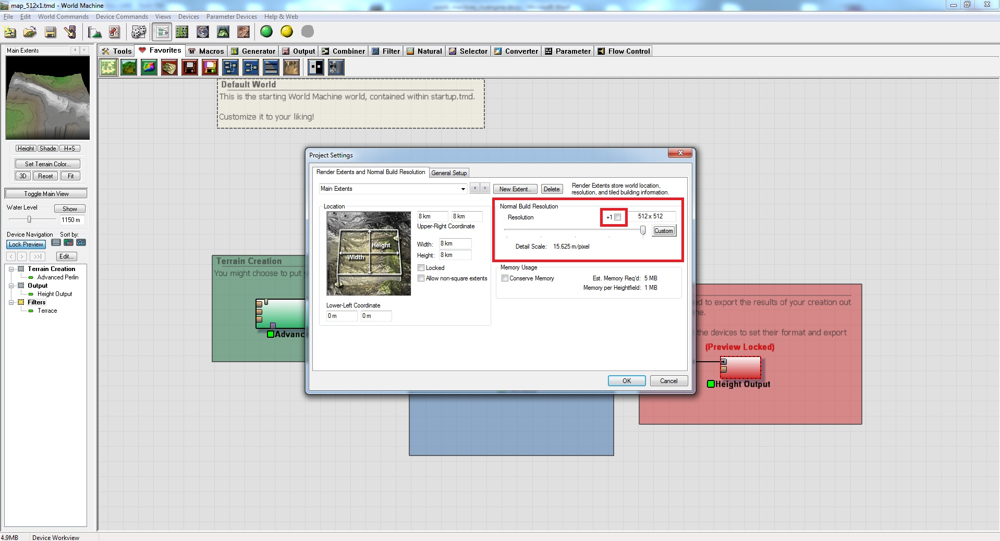
Теперь, когда он отображает разрешение 512 x 512, нажмите OK чтобы сохранить и закрыть диалог.
Создание карты высот
Дважды щелкните значок Выходная высота узел на графике WM (красный прямоугольник справа). Здесь мы собираемся выбрать тип выходного файла.
CRYENGINE поддерживает 4 различных типа файлов, которые вы можете напрямую экспортировать из WM. Одно 8-битное изображение низкой точности BMP и три 16-битных изображения более высокой точности RAW16, PGM и TIFF.
Рис2: Поддерживаемые типы файлов. 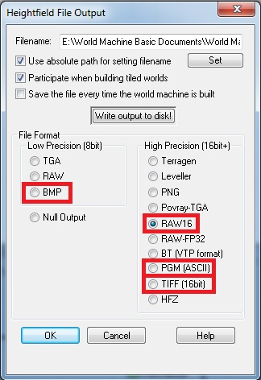
Мы будем использовать RAW16 (или ".r16" в проводнике Windows) тип файла.
Укажите место, куда вы хотите его сохранить, и нажмите кнопку "WОбряд вывода на диск!" кнопка для создания файла. Теперь мы готовы создать цветовую карту.
Создание карты цветов
Далее нам нужно добавить еще несколько узлов в граф WM. Это позволит нам сохранить файл, раскрасить цветовую карту и просмотреть данные в WM перед экспортом.
- Сначала мы добавим Растровый вывод узел для экспорта нужного изображения. Это можно найти в Устройства -> Вывод -> Вывод растрового изображения.
- Тогда нам также понадобится Колоризатор узел. Это позволяет вам выбирать из множества пресетов, которые будут распределять цвет по местности. Чтобы добавить это, перейдите в раздел Устройства -> Конвертеры -> Colorizer.
- Наконец у нас есть Вид наложения узел. Хотя это и не обязательно, это помогает визуализировать карты высот и цветов вместе внутри WM. Это также встречается в Устройства -> Выход -> Просмотр наложения.
Соедините их, как показано ниже, при этом логика выходит из задней части узла Terrace.
Рис.3: Соединения узлов 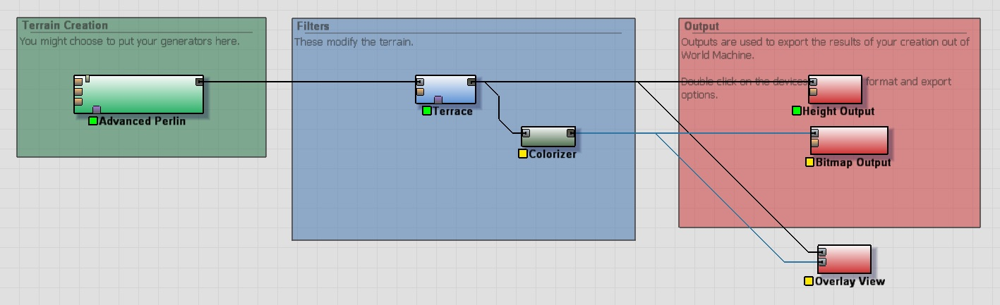
Узел колорайзера
Внутри узла раскрашивания (double — щелкните, чтобы открыть) вы можете выбрать один из пресетов из раскрывающегося списка, чтобы начать работу. На данный момент этого достаточно, чтобы применить цвет к местности.
Рис.4: Выбор пресета в узле колорайзера. 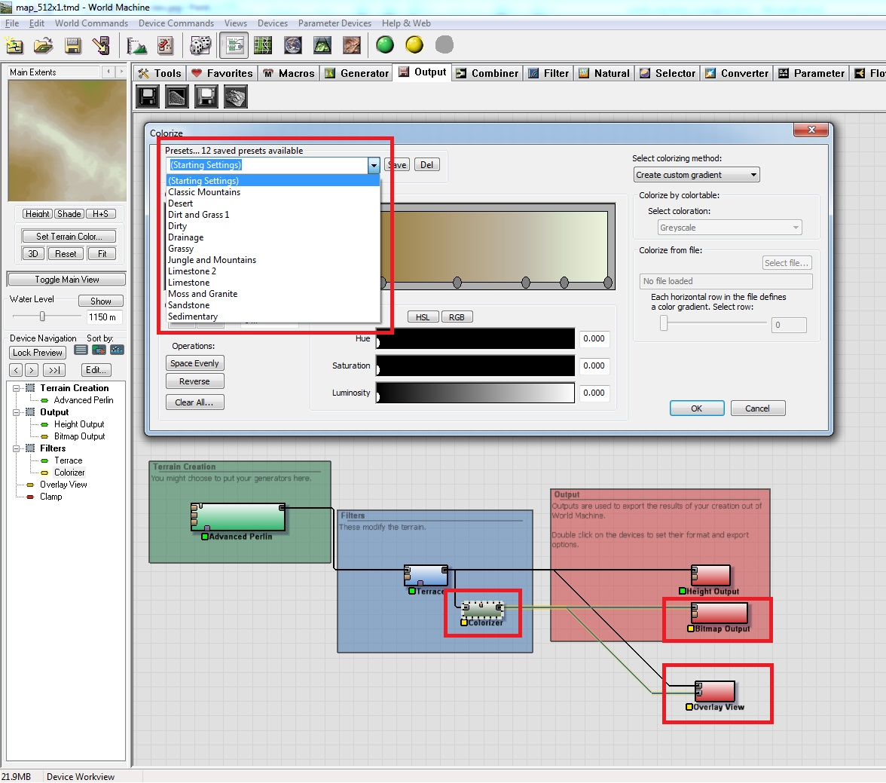
Узел вывода растрового изображения
Дважды щелкните значок Растровый вывод node, чтобы открыть его свойства. Тип файла, который CRYENGINE принимает для карты цветов местности: BMP.
Установите формат файла BMP. Нажмите кнопку ВтОбрядовый вывод на диск! кнопку, чтобы создать файл, затем нажмите OK.
Рис5: Свойства вывода растрового изображения 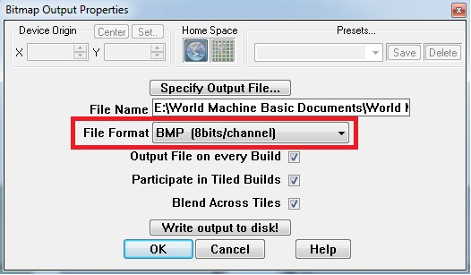
Узел наложения
Этот последний узел не создает никаких файлов для использования CRYENGINE, но очень полезен в WM для визуализации того, что вы создаете. Он накладывает цветовую карту на вашу карту высот (если вы настроили ее таким образом), чтобы дать вам предварительный просмотр создаваемого вами ландшафта.
Просто добавьте HM (карту высот) и CM (цветовую карту) ко входам узла (они будут идти только в одном направлении). Теперь нажмите F8 (3D-вид), чтобы увидеть местность, визуализированную с нанесенной сверху цветовой картой.
Сейчас хорошее время, чтобы сохранить ваш проект Мировой машины.
Теперь вы создали все файлы, необходимые для CRYENGINE; мы создали из World Machine:
- image.bmp (8-битная цветовая карта)
- выход.r16 (16-битная карта высот)
- проект.tmd (файл Мировой машины)
Настройка уровня в CRYENGINE
Откройте Sandbox и создайте новый уровень.
В Sandbox создайте новый уровень (Файл -> Создать) и выберите в настройках разрешение местности 512x512 чтобы соответствовать размеру ландшафта, который мы только что экспортировали из World Machine.
Также установите Метры на единицу значение до 1 (это множитель, который мы используем, чтобы сделать ландшафт больше, чем импортированное исходное изображение).
Рис6: Создание нового уровня 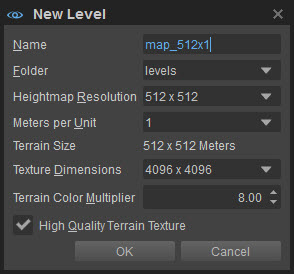
Размер карты высот | Множитель | Результирующий размер местности |
|---|---|---|
512 | 1 | 512м х 512м |
1024 | 1 | 1024м х 1024м |
2048 | 1 | 2048м х 2048м |
512 | 2 | 1024м х 1024м |
1024 | 2 | 2048м х 2048м |
2048 | 2 | 4096м х 4096м |
Это означает, что при уровне множителя x1 расстояние между каждой точкой на HM составляет 1 метр. На уровне х2 расстояние составляет 2 метра на вершину. Таким образом, увеличивая этот множитель, вы распределяете вершины на HM, и он меняет детализацию и охватываемое пространство.
Импорт карты высот
Импортируйте карту высот
Откройте Редактор ландшафта (Справа от области просмотра в UI по умолчанию или в Инструменты -> Редактор ландшафта). Затем в редакторе Terrain перейдите в Файл -> Импортировать карту высот.
Выберите файл карты высот (hm.r16), который мы только что создали из WM (по умолчанию он должен находиться в: Documents\World Machine Documents) и нажмите OK.
Сейчас вы, вероятно, этого не видите, вам придется вылететь, чтобы увидеть больше уровня, но в конечном итоге вы увидите что-то вроде этого:
Рис.7: Импортированная карта высот. 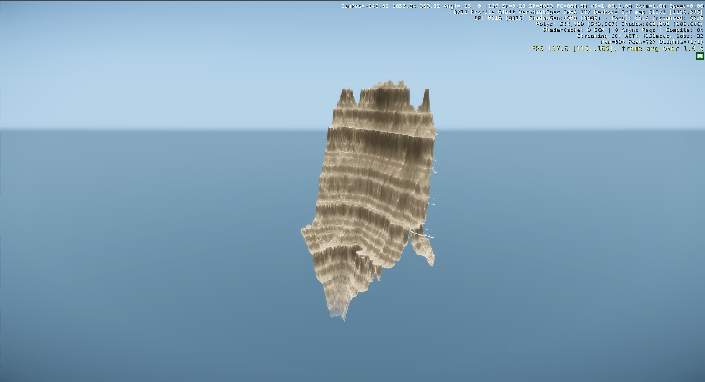
Ландшафт выше — это карта высот, включенная в файлы примеров; тот, который вы сделали ранее в WM, скорее всего, будет выглядеть иначе.
Установить максимальную высоту ландшафта
Здесь произошло то, что размеры XY верны (мы установили их на 512x512). Но значение Z слишком велико.
Чтобы превратить это в более удобную карту высот, нам нужно перейти к Редактор ландшафта и выбери Редактировать -> Установить максимальную высоту ландшафта.
Присвойте ему низкое значение 128. Верхняя часть ландшафта в 3D-окне просмотра будет обрезана, но это OK, поскольку мы собираемся повторно импортировать ее снова.
Это означает установку точки белого (255) карты высот в оттенках серого на максимум 128 м в движке.
Теперь снова импортируйте карту высот и обратите внимание, как мы потеряли огромные скалы и получили более плоский ландшафт благодаря установке разумного значения высоты.
Рис.8: Повторно импортированная карта высот. 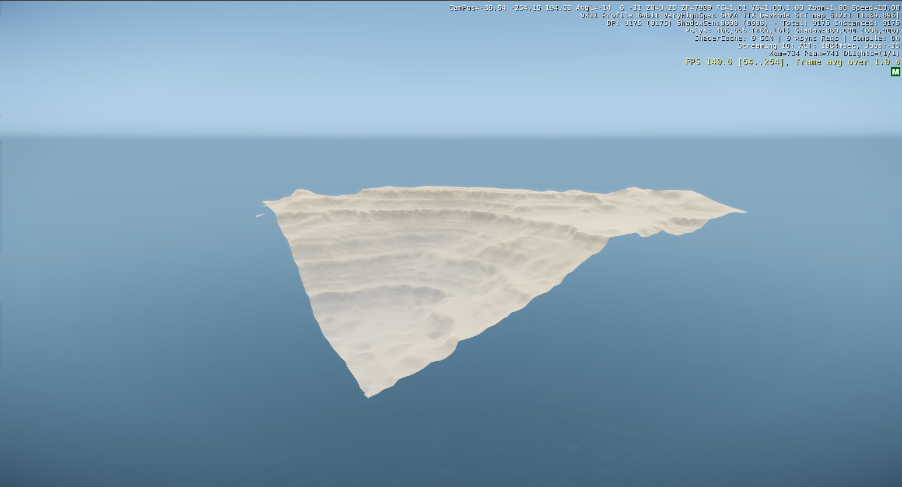
Зайди в игру и попробуй(Ctrl+Г). Это лучший способ получить представление о масштабах мира, который вы создаете.
Импорт цветовой карты
В настоящее время мы используем материал ландшафта по умолчанию (черно-белый флажок). Чтобы изменить текстуру ландшафта, нам нужно изменить две вещи: низкая детализация и высокая детализация фактура и материалы. См. Редактор ландшафта для получения дополнительной информации.
- Низкая детализация - Это то, что вы видите вдалеке, глядя на свою местность. Он основан на цветовой карте.
- Высокая детализация - Это то, что вы видите вблизи камеры. Когда вы посмотрите на пол, вы увидите красивые текстуры с высокой детализацией. Движок обрабатывает переход между двумя текстурами в зависимости от расстояния до камеры.
Текстура с низкой детализацией
Сначала мы заменим текстуру с низкой детализацией.
В редакторе ландшафта перейдите к Файл -> Экспорт/Импорт текстуры местности.. Откроется новое окно с обзором всего уровня сверху вниз.
Рис.9: Импорт текстуры местности. 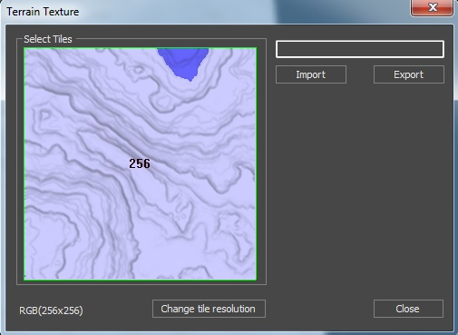
- Нажмите на изображение (256 посередине). Это один тайл текстуры местности, в настоящее время установленный на 256 что составляет половину разрешения текстуры ландшафта. Нажмите кнопку Изменить разрешение плитки кнопку и выбери 512x512 из раскрывающегося списка. Если ничего не происходит, убедитесь, что вы выделили плитку, щелкнув по ней (при выборе она станет серой).
- Теперь разрешение текстуры ландшафта установлено таким же, как у нашей карты высот, а также того же размера, что и текстура, которую мы экспортировали из WM. Вы должны убедиться, что размеры текстуры совпадают с разрешением тайла, иначе выдаст ошибку.
- Не снимая выделения с плитки, нажмите Импорт и выберите текстуру ландшафта, созданную из WM. После выбора нажмите Закрыть на Инструмент импорта, и цвет местности обновится. Поднимитесь высоко и проверьте выравнивание цветовой карты на местности. Он повернут? Заснеженная часть соответствует самому высокому гребню на карте? Если нет, поверните изображение на 90 градусов по часовой стрелке в Photoshop.
Теперь ваш ландшафт должен выглядеть примерно так:
Рис. 10: Цветовая карта импортирована. 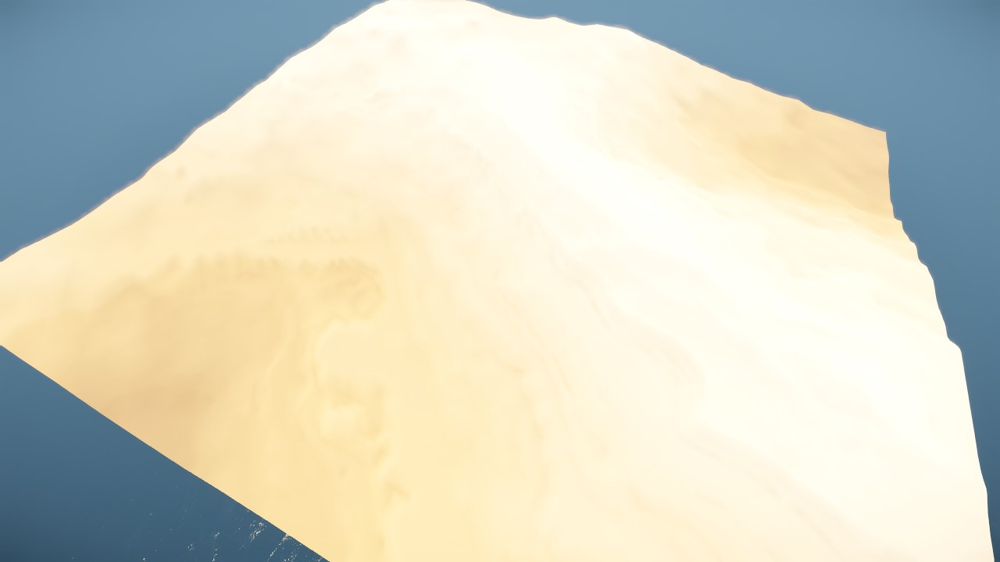
Вы можете заметить, что выходной ток слишком яркий. Чтобы затемнить, просто отрегулируйте настройки узла Colorizer в WM.
Текстура с высокой детализацией
В редакторе ландшафта нажмите кнопку «Paint» вверху:
Рис11: Кнопка рисования 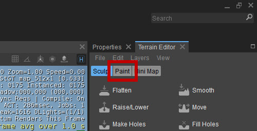
Здесь вы устанавливаете и назначаете различные текстуры травы, камней и земли, которые игрок будет видеть вблизи.
Что делает материал «материалом местности», так это применяемый шейдер. Каждый материал в комплекте Materials/terrain папка использует Terrain.layer шейдер. Вы можете применять эти материалы только к слоям ландшафта.
Если вы создаете свои собственные текстуры/материалы ландшафта, убедитесь, что вы установили тип шейдера на Terrain.layer по умолчанию Иллюм Шейдер.
Мы добавим два слоя к текстуре местности. Один для покрытия ровных участков (травы). И еще один для борьбы со склонами (скалами). Все это можно определить здесь. Мы также применим набор правил к каждому слою ландшафта, например минимальный/максимальный угол и минимальную/максимальную высоту.
- Выберите и выделите первый слой в списке (по умолчанию) и нажмите кнопку Папка кнопка рядом с Материал внизу:
Рис12: Кнопка папки с материалами 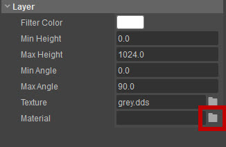
- Это позволит вам выбрать материал для вашего слоя. Просмотрите под
Materials\terrainпапку, и вы увидите доступные материалы ландшафта. - Выберите или выделите в редакторе материалов grass_1 и нажмите Открыть. Это применит этот материал к слою ландшафта.
- Дважды щелкните имя слоя в верхней части редактора ландшафта (в настоящее время «По умолчанию») и присвойте ему имя, соответствующее материалу, примененному к слою, например «Трава». Это только для вашей пользы, когда вы позже приступите к рисованию этими слоями.
- Теперь мы определим некоторые правила для этого слоя ландшафта. Мы изменим только Макс. угол здесь, чтобы 30 градусов, поэтому, когда мы будем рисовать этим слоем позже, он не будет пытаться рисовать на наклоне поверхности, превышающем 30 градусов.
Поскольку этот материал был применен к слою ландшафта по умолчанию, теперь весь ландшафт залит этим материалом. В качестве хорошей практики рабочего процесса обязательно выберите общую текстуру, например траву или грязь, которая будет видна повсюду, пока вы не нарисуете на ее месте новую текстуру, которую хотите.
- Далее мы добавим еще один слой ландшафта. Щелкните правой кнопкой мыши в разделе редактора ландшафта, где находится слой «Трава», и выберите Создать слой. Дайте ему имя «Рок».
- Нажмите еще раз на Папка кнопку и выберите материал камня, например cliff_island_3d.
- Определите правила еще раз, но на этот раз установите Минимальный угол чтобы 30 градусов.
- Щелкните правой кнопкой мыши имя слоя в верхней части редактора ландшафта и выберите Слой затопления.
Итак, подведем итоги... трава покрывает 0-30 градусов, а каменный материал - 30-90 градусов. Не перезаписывая друг друга.
Рисование слоев ландшафта
В нижней половине редактора ландшафта вы можете нажать кнопку «Рисовать», чтобы активировать режим рисования ландшафта:
Рис.13: Кнопка «Раскраска ландшафта». 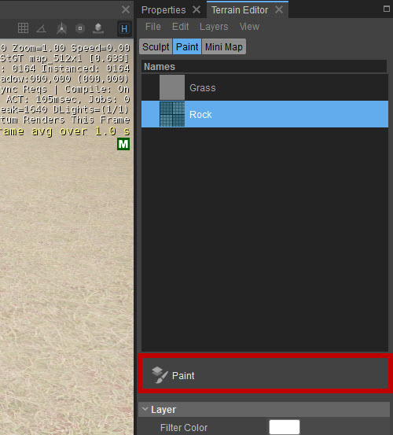
В верхней части панели вы можете увидеть список слоев местности: «Трава» и «Скала». Щелкнув между двумя слоями, вы заметите, что правила уклона меняются между разными слоями (то, что мы только что настроили):
Рис14: Художник по слоям. 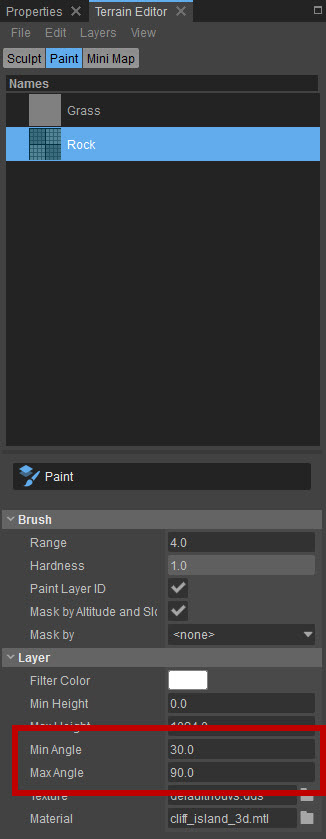
По умолчанию Layer Painter будет рисовать текстуры как высокого, так и низкого ландшафта одновременно. Поскольку мы создали текстуру с низкой детализацией в WM, мы не хотим, чтобы это произошло.
В этом инструменте есть 3 способа применения текстур ландшафта.
- Нарисуйте как высокую, так и низкую детализацию одновременно (режим по умолчанию).
- Рисуйте только с высокой детализацией.
- Рисуйте только низкие детали.
Картина Только высокая детализация
Это метод, который мы хотим использовать, поскольку мы не хотим рисовать текстуру с низкой детализацией, поскольку она была создана в WM (цветовая карта).
Для этого установите Ползунок твердости вплоть до 0.
Тогда будут рисоваться только текстуры с высокой детализацией (материалы, которые мы назначили ранее (grass_01 и cliff_island_3d).
Теперь вы можете безопасно закрасить слой ландшафта, не перезаписывая текстуру, которую мы импортировали из WM.
Рисуем только с низкой детализацией
Чтобы перезаписать текстуру, импортированную из WM, без добавления высокой детализации, снимите флажок тот Идентификатор слоя краски флажок.
Также установите Ползунок твердости вернуться к 1. Или, если вам просто нужно немного настроить текстуру, установите ползунок в положение между 0 и 1, в зависимости от того, насколько вы хотите перезаписать (подумайте о непрозрачности).
Теперь, используя Метод рисования только с высокой детализацией выше, выберите слой «Камень», установите большой радиус кисти и закрасьте весь ландшафт за один прием.
Теперь это подчинилось:
- Правила наклона, изложенные ранее.
- Закрашены только детали текстуры.
Завершение
Чтобы завершить это руководство и сделать его доступным для запуска игры, мы сделаем еще несколько вещей.
Создайте текстуру местности
Теперь у нас есть карта высот и карта цветов ландшафта в движке, нам просто нужно сгенерировать текстуру поверхности ландшафта, и все готово.
Для этого в Редактор ландшафта, иди в Файл -> Создать текстуру местности:
Рис.15: Создание текстуры местности. 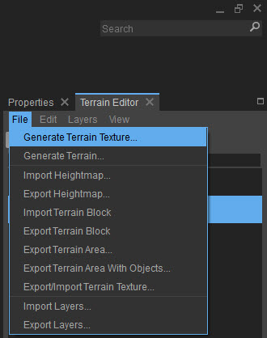 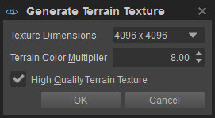
Примите значения по умолчанию. Нажмите OK и он сгенерирует текстуру.
Экспорт в движок
Теперь вы завершили импорт карты высот ландшафта и карты цветов из WM в CRYENGINE.
Файл -> Сохранить твоя работа, тогда Файл -> Экспорт в движок.
Результат
Теперь, после быстрого распределения растительности, некоторых настроек Environment Editor, добавления небесного купола, и у вас должно получиться что-то вроде этого:
Рис17: Конечный результат 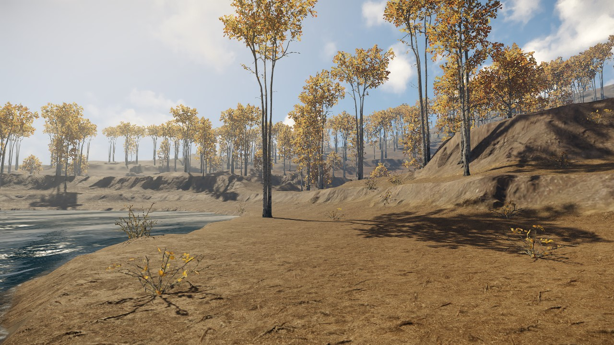